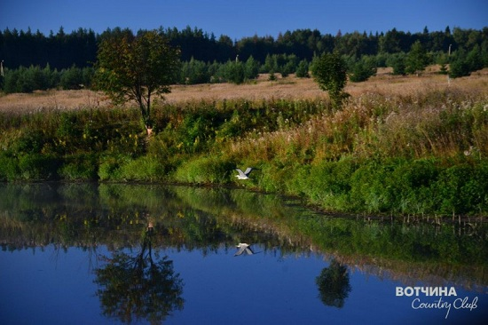

В наше время, как и в любое другое, лучшим индикатором экологичности местности остаются животные, растения, только все меньше тех мест, где они обитают.
К счастью, целая семья Серой Цапли, филины, тетерева, куропатки, бобры и множество безопасных и ставших уже редкими птиц и животных – часть флоры и фауны нашего поселка.
Потревоженные птицы взлетают, подпуская человека совсем близко, а бобры дают себя фотографировать. Охотники уже не первый сезон приходят с серьезной добычей из окрестностей Вотчины: лось, кабан, разнообразная дичь.
И все же, мы решили воспользоваться последними разработками цивилизации и провести экспертизу земли, воздуха и воды в Вотчине.
На основании проведенного исследования наш поселок получил аттестат аккредитации испытательной лаборатории ООО "Локинвест". Что же именно было обнаружено и документально подтверждено? Сразу скажем, что итоги очень приятные, в чем можно убедиться самостоятельно.
Например, изучив протокол № 1, можно узнать результаты исследования воды и снега. Установлено, что пробы воды, отобранные в поселке Вотчина из родника "5 ключей", по химическим и радиологическим показателям соответствуют установленным санитарным нормам и правилам "Водоотведение населенных мест, санитарная охрана водных объектов". Цветность, щелочность, жесткость и другие параметры соответствуют признакам великолепной чистой воды. Она отлично подходит для удовлетворения самых разнообразных нужд.
Также проводилось исследование воздуха и уровня гамма-излучения, о чем свидетельствует протокол № 2. Были проанализированы общий радиационный фон, концентрация радона в воздухе, параметры микроклимата, микробиологический состав воздуха. На основании этого мы получили аттестаты и свидетельства, в которых зафиксировано отсутствие каких-либо значительных отклонений. Все показатели, полученные в результате проверки, соответствуют допустимым и не выходят за рамки санитарных норм и правил.
Помимо воздуха и воды, специалисты осуществили исследование поверхности земли. Согласно соответствующему протоколу № 3, измерялась плотность потока радона с поверхности. В результате были получены данные, которые подтверждают, что превышения плотности потока радона нет. Избытка гамма-излучения также не обнаружено.
Итак, наша вода прекрасно подходит для питья, а воздух - для дыхания!
Между тем, по результатам проведенного мирового исследования можно прийти к выводу, что прозрачность земной атмосферы за последние годы ухудшается. Ежегодно от загрязнения атмосферы и гидросферы страдают миллионы людей. Опасным является и гамма-излучение, способное породить генетические нарушения у будущих поколений.
Однако, к счастью, такая удручающая ситуация наблюдается далеко не везде. Мы рады сообщить, что наш поселок является одним из тех замечательных оазисов, которые могут похвастаться экологическим благополучием. Надеемся, что Вы заботитесь о своем здоровье и о здоровье своих будущих детей и внуков, задумайтесь о покупке дома в поселке Вотчина.
|  |
Error: Undefined variable: category_text File: /var/www/votchina.su/data/www/votchina.ru/templates/template-news.php (65)